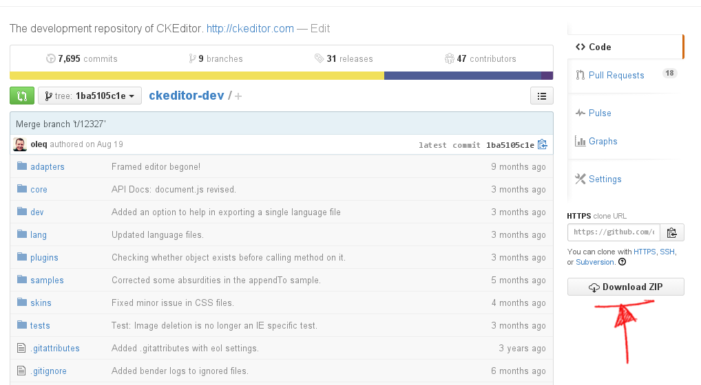
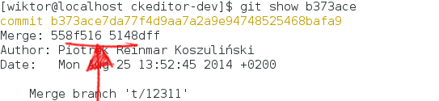
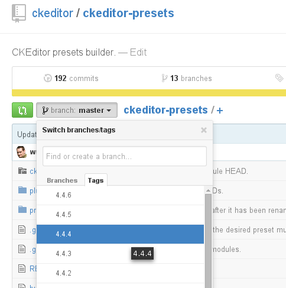
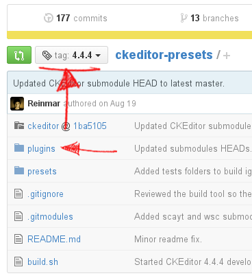
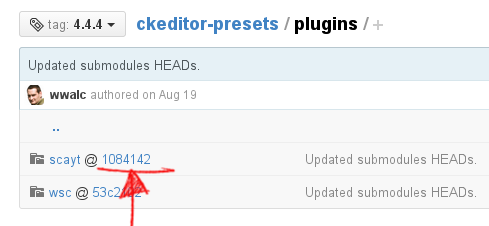
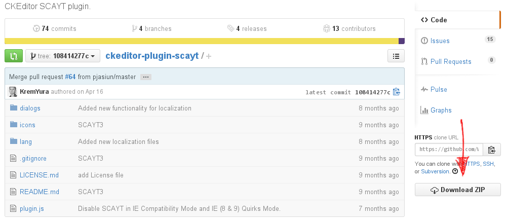

Patching Old CKEditor Versions
Patching Old CKEditor Versions
It may happen that upgrading your project to use the latest CKEditor version is not an option, although the situation requires it, for example if your application is running on a production environment and you are not allowed to perform major upgrades without prior testing of the entire application by the QA team.
Please note that this article describes a method that is unrecommended and requires deep understanding of the code you are porting as well as the build process. It also comes with no guarantee that it will work in all scenarios. Full upgrade is always a recommended soultion.
It is possible to keep using the old version of CKEditor with selected patches applied, although keep in mind that you should be really careful when doing it.
Note that depending on the complexity of changes made in CKEditor, porting selected features might be hardly possible. For example, when using CKEditor 4.0.3 and trying to port a relatively simple change added in CKEditor 4.3.2, it may turn out to be impossible because that change is using API introduced in CKEditor 4.2.
# Requirements
In order to patch CKEditor and build a release version, the following required components must be installed:
- Java (CKBuilder is a Java application)
- Bash (Unix systems) or “Git Bash” on Windows (provided by msysGit)
- Git (optional)
- Node.js (optional)
# Source Version vs Release Version
It is unlikely that you can apply a patch to the package that you already run on production, because most of the time your production environment runs the release version of CKEditor.
# Release Version
The release version is a CKEditor package that was processed by CKBuilder in order to reduce the number of files and minify the resulting code. The release version is offered for download on CKEditor download page and also by the CKEditor online builder.
# Source Version
Without the build process, the CKEditor “full” package would require over 250 files (HTTP requests) to run due to having to load separate plugin files, language files and icons. The “source” version of CKEditor is a version that you can download from the Git repository; it consists of hundreds of files. This is the version on which patches can be applied and as mentioned earlier, it is very unlikely that you are using it on a production environment.
# How to Check Which Distribution I Use?
Check the size of the ckeditor.js file located in the ckeditor folder that is installed on your website. If the size of that file is larger than 50KB, you are using the release version.
# Getting the Source Code of CKEditor
In order to apply patches to CKEditor and then build the release version, you need the source version. The source version of CKEditor is stored on GitHub.
# ckeditor4 vs ckeditor4-presets
There are two repositories where CKEditor source files are kept: ckeditor4 and ckeditor4-presets.
The ckeditor4-presets repository is used by the CKEditor team to build the Basic/Standard/Full distributions. It uses ckeditor4 as a dependency and scripts included there further automate the build process:
- It has information about which plugins should be included in which preset.
- It loads spell checker plugins (
scaytandwsc) from separate repositories where they are developed, if they are to be included in a release. - It sets the proper configuration file in the release package depending on the created preset.
Although ckeditor4-presets saves time in the long term, to reduce the complexity of this documentation article we recommend cloning the ckeditor4 repository.
# Downloading ckeditor4
The following section descibes how to download the source version of CKEditor from its GitHub repository.
# Which Version to Download?
Before downloading files you need to know which version and revision you are currently using. The revision can be checked by opening the ckeditor.js file and searching for the first occurrence of “revision”. You should see something like this in the middle of ckeditor.js:
{timestamp:"E7KD",version:"4.4.4",revision:"1ba5105"
In this case the version of CKEditor is 4.4.4 and the revision is 1ba5105.
# Downloading with git clone
Use the following steps to download CKEditor with a command line tool.
git clone https://github.com/ckeditor/ckeditor4.gitcd ckeditor4git checkout <revision>
Where <revision> has to be set to exactly the same revision that you are using. For the example above that would be:
git checkout 1ba5105
# Downloading without Git
Use the following steps to download CKEditor directly from the browser.
-
Open
https://github.com/ckeditor/ckeditor4/tree/<revision>in your browser. For the example above the proper URL would be: https://github.com/ckeditor/ckeditor4/tree/1ba5105. -
Press the “Download ZIP” button.
 -
Unzip the file and rename the top-level folder into
ckeditor4.
# Patching Process
CKEditor source code is stored in the Git repository. The development takes place in the Git repository hosted on GitHub. Explaining how Git works is out of the scope of this document. All further instructions will cover one selected scenario based on which it should be much easier to understand the entire procedure.
# Select the Changes You Want to Port
If you are reading this document, most probably you already know which feature you want to port. Whenever you find a change that you need to port it is recommended to find in which ticket on the GitHub issues page or a former Development site the change has been tracked.
# Example
Suppose you are interested in porting a patch for the following problem:
Remove Format button did not remove the <cite> element in versions prior to 4.4.5.
By looking into the changelog you find a link to ticket #12311. The ticket not only explains what the problem was and how to reproduce it, but at the end it also contains a link to a changeset where the code fix was introduced: http://github.com/ckeditor/ckeditor4/commit/b373ace
The hash of the changeset is b373ace.
# Applying the Changes
# Without Git
If for any reason you cannot use Git, you have to apply the changes manually. It is highly unrecommended though. Be careful when changing the files manually.
- View the changes on GitHub using the link found in the ticket: http://github.com/ckeditor/ckeditor4/commit/b373ace
- Search for relevant files in your
ckeditor4folder. Open them in your editor. - Add/modify/remove code as shown in the diff.
Note that the line numbers displayed on GitHub and in your editor might be different due to different versions on which you work and to which the change was applied. In worst case it may turn out that the lines of code that have been changed do not even exist. In such case a full upgrade and testing will require less effort than continuing with patching.
# With Git
As mentioned earlier, this is not a Git manual, so we will continue the instructions for the previous example without more in-depth Git explanations.
The hash of the changeset is b373ace, so open your command line tool and go through the steps below:
-
cd ckeditor4 -
git show b373aceYou can see that this is a merge commit. This means that in order to create a patch from it you need to call:
git diff 558f516...5148dff > 12311.patch -
You can now apply the patch
git apply -v 12311.patch
Resolving Conflicts
The git apply command will fail in the example above due to the CHANGES.md file.
Fortunately, since you know that this file is not required by CKEditor, you can apply the patch ignoring that single file:
git apply -v 12311.patch --exclude=CHANGES.md
Alternatively, when the patch does not apply cleanly, you may fall back on the 3-way merge with the --3way flag. Git will then leave the conflict markers in the files in the working tree for the user to resolve:
git apply -v 12311.patch --3way
Note: Check the Git documentation for more information about resolving conflicts.
# Building CKEditor
Building CKEditor from source is described in a separate article: Building CKEditor from Source Code.
Please read that article just to understand the basic concept before going further.
# Prepare build-config.js
As explained in the documentation, the build configuration file (dev/builder/build-config.js) defines which plugins will be included in the created build.
In order to be able to create the same build that you used so far, you should take build-config.js from the root folder of the CKEditor distribution that you are still using on production and overwrite dev/builder/build-config.js with correct build-config.js.
# Add Missing Plugins to the plugins Folder
It is possible that ckeditor4/plugins does not contain all plugins that your build had. Before building you need to verify build-config.js and check whether each plugin listed there exists in the plugins folder.
# Your Custom Plugins
If you used a custom build of CKEditor with your own custom plugins, copy them to the ckeditor4/plugins folder.
# Spell Checker Plugins
If the build that you used had spell checker plugins (scayt or wsc), then you need to copy them as well. Spell checker plugins must be downloaded with the proper revision. The revision of scayt and wsc plugin that was used with release versions of CKEditor can be checked in the ckeditor4-presets repository
-
Press the “branch:” selection list and then select the Tags tab.
-
Select the tag that matches the version of CKEditor that you are using.
 -
After selecting the tag (
4.4.4in this example), open thepluginsfolder. -
In the
pluginsfolder you will find a link to the correct revision of a plugin that was included in CKEditor 4.4.4. -
Click both links to exact revisions of the
scaytandwscplugins. You will be redirected to their project pages, where the “Download ZIP” option on the right side will return the correct version of each plugin. -
Unpack the downloaded plugins, renaming their folders to
scaytandwsc, respectively.
# Third-Party Plugins from the Addons Repository
If you used third-party plugins from the addons repository, make sure you download them again from the addons repository, taking the appropriate versions.
# Run CKBuilder
Once all required plugins are available, you are finally ready to run the command line builder to create the release version of CKEditor.
On Unix system open the terminal, on Windows open the “Git Bash” window, and type the following:
cd dev/builder./build.sh
Assuming that Java is installed on your computer, the CKEditor release version should be created in less than a minute.
# Using Automated Tests to Check the Patched Version
Starting from version 4.4.2, the CKEditor project is using Bender.js for testing. You can use the automated tests to quickly verify that patching did not break anything. If after applying the patch you notice that some tests started failing although they did not fail on the original version, you should understand what the test is checking and verify the results of the failed test manually. There is a chance that the test fails because the expected result is now different.
Note: At the moment of writing this documentation, due to constant enhancements, Bender.js is not yet backwards compatible with older versions of CKEditor (tests). It means that in order to test older versions of CKEditor you need to install the exact version of Bender that was required to test that particular release.
# Testing CKEditor 4.4.4 (example)
CKEditor 4.4.4 has been released on August 19th, 2014:
https://github.com/ckeditor/ckeditor4/releases
The latest version of Bender.js available on that day was 0.1.7:
https://github.com/benderjs/benderjs/releases
- Clone the
ckeditor4repository.
git clone https://github.com/ckeditor/ckeditor4.git
-
Checkout the tag that indicates the version you want to work with.
git checkout 4.4.4 -
Uninstall the globally installed Bender.js, just in case you used it already in the past.
npm uninstall -g benderjsNote: You may need administrative rights to do this (e.g.
sudo).
-
Install the correct version of Bender.js for the CKEditor version you want to test.
npm install -g benderjs@0.1.7Note: You may need administrative rights to do this (e.g.
sudo).
-
Install the dependencies that are required to test CKEditor.
npm installDo not use
sudoor the global-gflag here.
-
Initialize the Bender.js project.
bender init -
Run the test server.
bender server run -
Open the URL returned by Bender.js in your browser. You can now run tests in your browser!
Note: There might be problems with running Bender.js on CKEditor installations older than 4.4.4 due to broken dependencies. The instruction is valid for version 4.4.4 and above.
For more information about the testing CKEditor, check the CKEditor Testing Environment (Bender.js) article.
# Further Reading
The following resources discuss related issues:
- The Upgrading CKEditor article explains how to upgrade your CKEditor 4.x installation to the latest version.
- The Getting the Source Code article explains where you can get and examine CKEditor source code.
- The Getting the Source Code article explains how to build CKEditor from source.
- The CKEditor Testing Environment (Bender.js) article gives an overview of Bender.js.